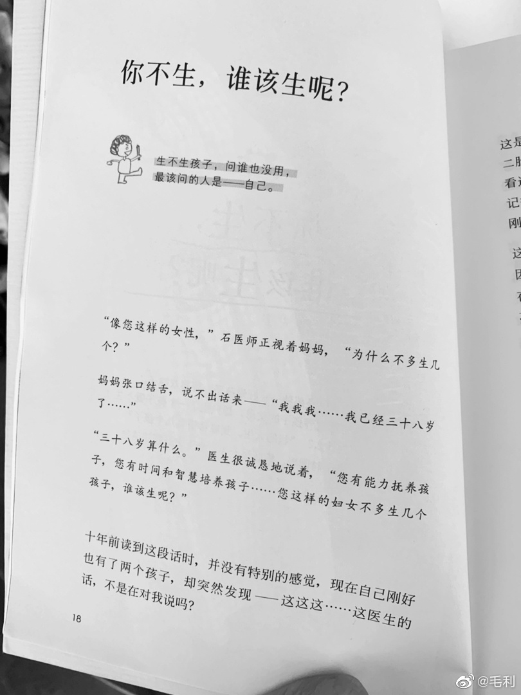

#不明所以# 跟明俊聊起新闻，清华毕业生年薪五十万做家政，我以为他也会像网上那样感叹可惜。他说：如果没有学校这个招牌，估计她也拿不到50万，而且做富豪家庭的管家，可能比当老师好一些。大家的观念确实在变化。
太出色以及人生顺利，就是会引来这种无缘无故的嫉恨，拉黑最轻松。//@毛利:？这就是母婴博主的待遇吗？太可怕了。//@名叫九儿的猪:我怎么那么讨厌毛利啊，精准收割人生无望只能生二胎的傻老娘们。然后还有人信她。。。。。在她人生就能看出来，生孩子都是个生意，需要就生一个@毛利:虽然我有时间有能力有智慧但是好累啊医生！又要干活又要母乳每天睡五小时我想活得长一点啊呜呜呜呜 
老婆孩子热炕头，瓦尔登湖这类，都可以算新游戏。当然也有未来机会突变带来的新游戏。//@Miki要努力:然而并没有什么新的游戏。@Ada李力:#不明所以# 我的理解，躺平跟颓废没什么关系，只是看明白目前这个社会游戏规则极不公平，老子不跟你玩儿而已。当新游戏出来时，还是可以再玩玩的。
回复@Miki要努力:只跟自己比的游戏，如果还不上心，玩不好，那就没办法了。//@Miki要努力:这种翻身的概率简直比内卷赛道还低。//@Ada李力:老婆孩子热炕头，瓦尔登湖这类，都可以算新游戏。当然也有未来机会突变带来的新游戏。//@Miki要努力:然而并没有什么新的游戏。@Ada李力:#不明所以# 我的理解，躺平跟颓废没什么关系，只是看明白目前这个社会游戏规则极不公平，老子不跟你玩儿而已。当新游戏出来时，还是可以再玩玩的。
是的，世界上不止赚钱出人头地这一种游戏嘛//@四夕汀:是啊，当所有人都在红海里卷的话，换个地方玩自己的说不定就是新的蓝海。还记得之前听得意忘形（很喜欢的一个播客）里说，know your game，create your game！@Ada李力:#不明所以# 我的理解，躺平跟颓废没什么关系，只是看明白目前这个社会游戏规则极不公平，老子不跟你玩儿而已。当新游戏出来时，还是可以再玩玩的。